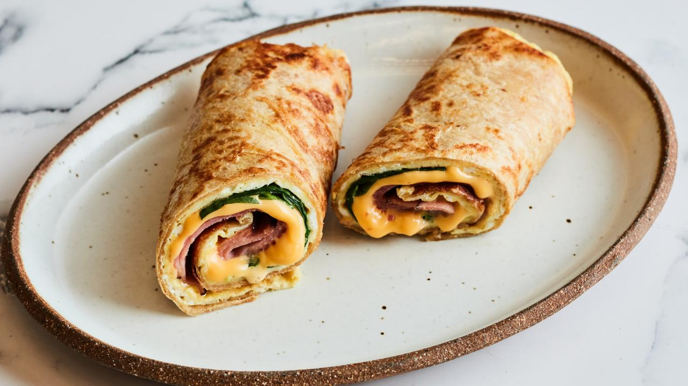

Tortilla Breakfast Wrap
Ingredients
- 2 large eggs
- Kosher salt and freshly ground black pepper
- 1 tablespoon unsalted butter
- One 8-inch whole-wheat tortilla
- 1/3 cup lightly packed baby spinach
- 2 slices American cheese
- 2 thin slices deli Black Forest ham
Directions
- Combine the eggs with a pinch of salt and several grinds of pepper in a small bowl and whisk to combine.
- Melt the butter in a medium nonstick skillet over medium heat.
Pour in the egg mixture and swirl the skillet to coat the bottom.
Working quickly, dip the tortilla in the eggs,
then flip it over and place it back in the skillet (both sides should be coated in egg).
Season with another pinch of salt.
- Continue to cook the eggs until they are completely set on the bottom,
1 to 2 minutes. Slide a large rubber or silicone spatula under the tortilla and flip the whole tortilla and egg over in one single motion.
Scatter the spinach on the half of the tortilla that's closest to you,
then top with the cheese and finally the ham. Continue to cook until the bottom is golden brown,
about 1 minute more. Remove from the heat and slide onto a plate.
- Starting with the side that has all the filling,
start rolling the tortilla into a tight wrap or burrito.
Keep the seam side facing downward so the wrap stays closed.
Cut in half crosswise and serve.
credit: foodnetwork.com